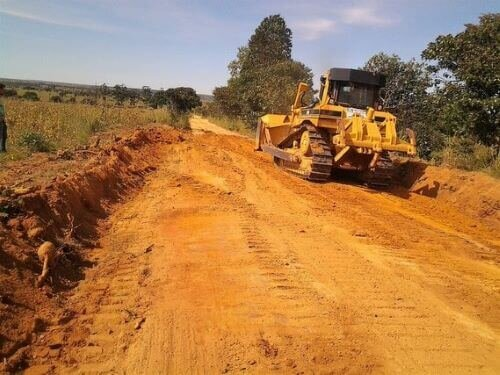

Generally, Earthen roads are majorly used in construction sites and rural areas. Those roads are laid with available material in that locality. The material that which is laid as an Earthen road should meet the required standards.
Most of these methods are relatively expensive to be implemeted by slowly developing nations and the best way is to use locally available materials with relatively cheap costs affordable. So, to analyze the properties there are vast number of testings are there. Based on the properties we are going to choose the suitable soil. It includes some of the major testings like load transmission test, CBR test etc.... If the soil doesn't meet the standards then we are going to add different material (rock dust) that which are locally available to increase the stability of the soil. We are going to perform the different testings on the native soils and determine the properties like index and engineering properties.
The properties we considered are,
• Density of soil.
• Cohesiveness of soil.
• Compressibility of soil.
• Stability of soil.
• Permeability of soil.
• Drainage conditions.
• Minimum changes in the soil after applying load.
Finally, based on their performance we are going to choose the soil which is suitable.
Every property of a soil is unique of its own nature. And we choose or determine the soil having all the properties which are necessary in stability of soil laying as Earthen road.
➢ Admixture’s: Flyash, Rockdust, Bentonite.➢ Keywords: Native soil, load transmission, CBR testing, Stability, Drainage, Permeability, Cohesiveness, Particle size analysis